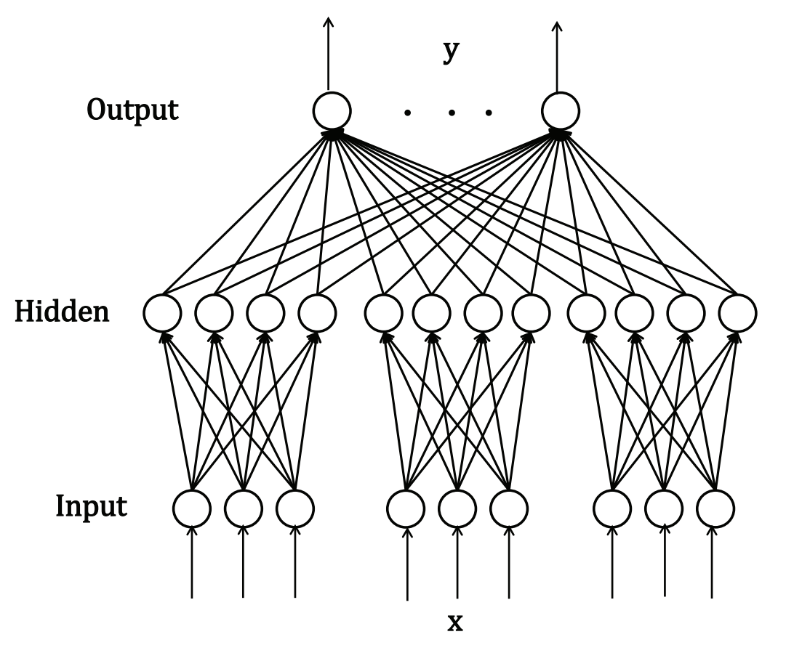
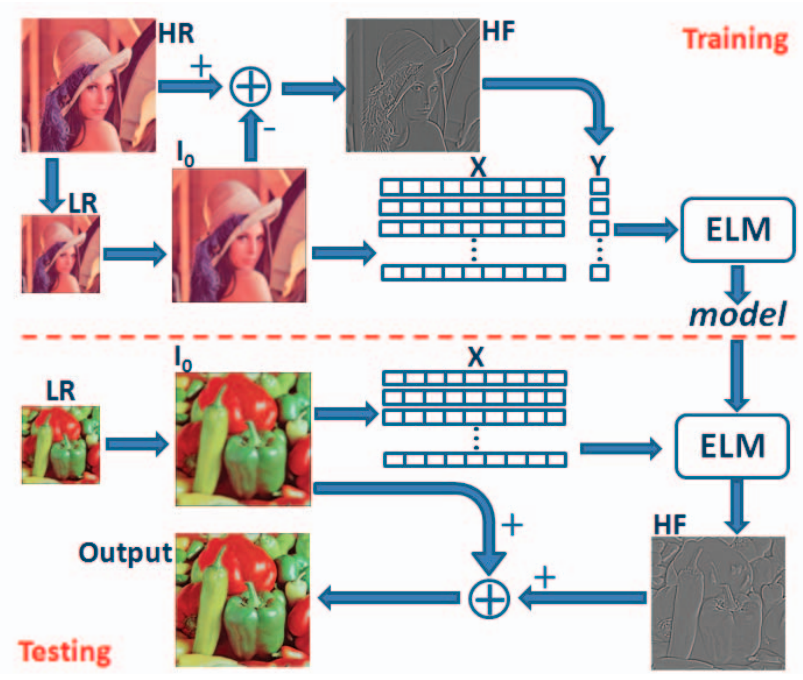
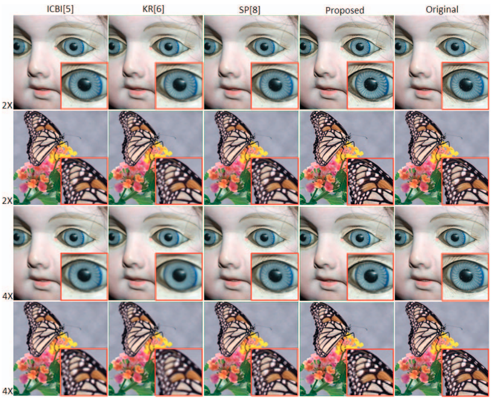
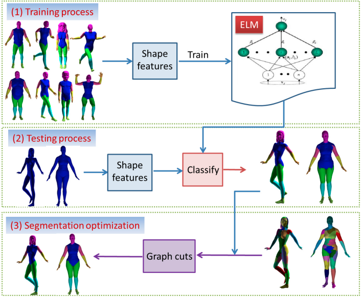
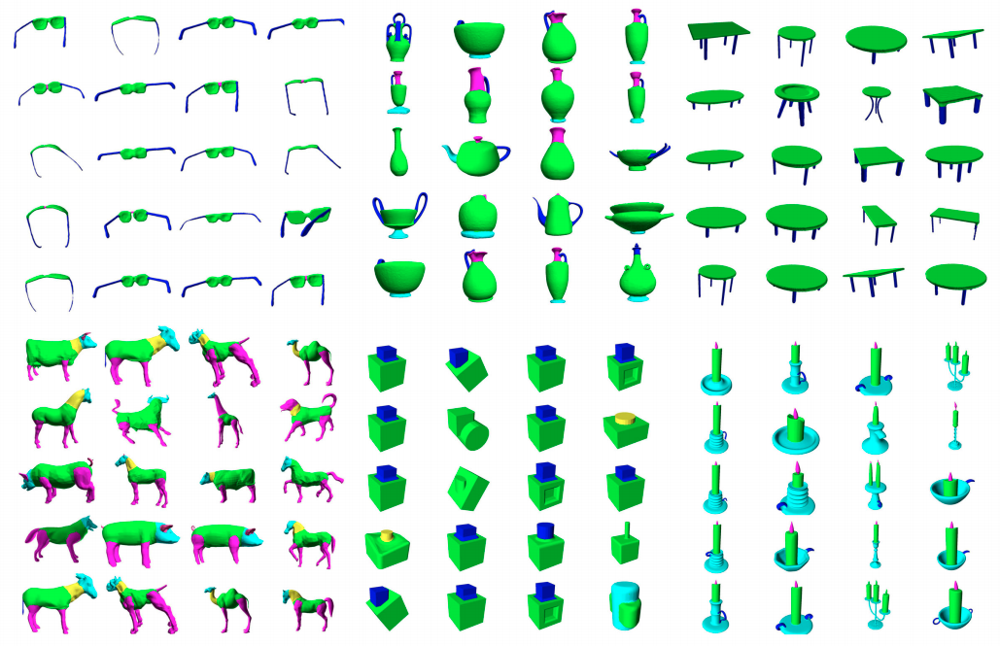
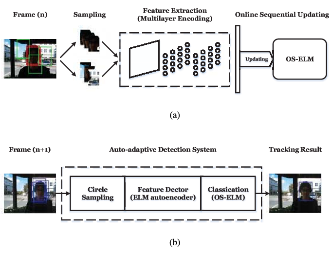
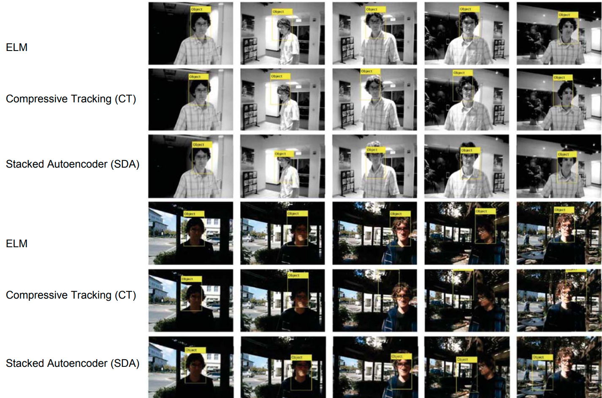

Extreme Learning Machine
by Kemal Erdem | @burnpiroELM what?
- Guang-Bin Huang - "Extreme learning machine: Theory and applications" 2006
- Does not depend on backpropagation!
Single hidden Layer Feedforward Neural network © Shifei Ding under CC BY 3.0
$$ f_L(x) = \sum_{i=1}^{L}\beta_ih_i(x) = \sum_{i=1}^{L}\beta_ig(w_i * x_j + b_i), j = 1,...,N $$
$$ T = H\beta $$ Where $H$ is called the hidden layer output matrix
$$ H = \begin{bmatrix} g(w_1 * x_1 + b_1) & ... & g(w_L*x_1+b_L) \\ \vdots & ... & \vdots \\ g(w_1 * x_N + b_1) & ... & g(w_L * x_N + b_L) \end{bmatrix}_{N \times L} $$ $$ \beta = \begin{bmatrix} \beta_1^T \\ \vdots \\ \beta_L^T \end{bmatrix}_{L \times m} T = \begin{bmatrix} t_1^T \\ \vdots \\ t_N^T \end{bmatrix}_{N \times m} $$
$$x_i \in R^n, t_i \in R^m$$ $$g: R \rightarrow R$$ if $g$ is infinitely differentiable then $H$ is invertible
$$ \frac{\delta g(x)}{\delta x} = \frac{\delta}{\delta x} \frac{1}{1+\exp^{-x}} = \frac{1}{1+\exp^{-x}} * \left(1 - \frac{1}{1+\exp^{-x}} \right) $$
$$L \leq N$$ $N$ is a number of distinct samples $(x_i, t_i)$ $L$ is a number of hidden neurons $$|| H_{N \times L}\beta_{L \times m} - T_{N \times m} || < \epsilon, \epsilon > 0$$
$$|| H\hat\beta - T || = \min_{\beta}|| H\beta - T ||$$
$$ \hat\beta = H^{\dagger}T $$ Where $H^{\dagger}$ is the Moore-Penrose generalized inverse of $H$ ELM-NC-2006 - Theorem 5.1 -> C.R. Rao, S.K. Mitra 1971
ELM algorithm
- Randomly assign weight $w_i$ and bias $b_i$, $i = 1,...L$
- Calculate hidden layer output H
- Calculate output weight matrix $\hat\beta = H^\dagger T$
- Use $\hat\beta$ to make a prediction on new data $T = H\hat\beta$
Live example
Offline version available here: https://github.com/burnpiro/elm-pure/blob/master/ELM%20example.ipynb- I-ELM (incremental) 2006 - add new nodes to hidden layer and froze existing ones
- P-ELM (pruning) 2008 - start with a huge network and remove nodes
- Regularized ELM 2009 - $\hat\beta = \left (\frac{1}{C}+H^TH \right )^{-1} H^TT$
- TS-ELM (two-stage) 2010 - combination of I-ELM and P-ELM
- V-ELM (voting) 2013 - create many ELMs and remove nodes base on misclassification results
- KELM (kernel) 2014 - kernel function instead of $HH^T$
- ELM-AE (autoencoder) 2014 - unsupervised mapping
 $$ H^{\dagger} = \begin{cases} (H^THH^T)^{-1} & N \leq L \\ (H^TH)^{-1}H & N > L \end{cases} $$
$$ \begin{array} {|rr|} \hline \text{Dataset} & \text{Algorithms} & \text{Acc Test [%]} \\ \hline \text{CIFAR-10} & \text{ELM 1000 (1x)} & 10.64 \\ & \text{ELM 3000 (20x)} & 71.40 \\ & \text{ELM 3500 (30x)} & 87.55 \\ & \text{ReNet (2015)} & 87.65 \\ & \text{EfficientNet (2019)} & 98.90 \\ \hline & & & & & & & & \\ \hline \text{MNIST} & \text{ELM 512} & 92.15 \\ & \text{DELM 15000} & 99.43 \\ & \text{RNN} & 99.55 \\ & \text{BP 6-layer 5700} & 99.65 \\ \hline \end{array} $$
 
Image super-resolution by extreme learning machine, 2012 - Le An, Bir Bhanu 
3D Shape Segmentation and Labeling via Extreme Learning Machine 2015 - J. Tang, C. Deng and G. Huang 
Extreme Learning Machine for Multilayer Perceptron 2014 - Zhige Xie, Kai Xu, Ligang Liu, Yueshan XiongReferences
- "Extreme learning machine: Theory and applications" 2006 G.B. Huang, Q.Y. Zhu, C.K. Siew
- “Extreme learning machine for regression and multiclass classification” 2012 - G.-B. Huang, H. Zhou, X. Ding and R. Zhang
- "Clustering in Extreme Learning Machine Feature Space" 2014 - He Qing, Xin Jin, Changying Du, Fuzhen Zhuang and Zhongzhi Shi
- “Deep Extreme Learning Machine and Its Application in EEG Classification” 2015 - S. Ding, N. Zhang, X. Xu, L. Guo and J. Zhang
- "Extreme Learning Machine: A Review." 2017- Albadr, Musatafa & Tiuna, Sabrina.
- “A Multiple Hidden Layers Extreme Learning Machine Method and Its Application” 2017 - Dong Xiao, Beijing Li and Yachun Mao
References 2
- "Extreme Learning Machines" 2013 Erik Cambria, Guang-Bin Huang
- “EfficientNet: Rethinking Model Scaling for Convolutional Neural Networks” 2019 - Mingxing Tan, Quoc V. Le
- "ReNet: A Recurrent Neural Network Based Alternative to Convolutional Networks." 2015 - Visin, F.; Kastner, K.; Cho, K.; Matteucci, M.; Courville, A.; Bengio, Y.
- “Deep, big, simple neural nets for handwritten digit recognition." 2010 - Cireşan DC, Meier U, Gambardella LM, Schmidhuber J.
- "Fast, Simple and Accurate Handwritten Digit Classification by Training Shallow Neural Network Classifiers with the 'Extreme Learning Machine' Algorithm". 2015 - McDonnell MD, Tissera MD, Vladusich T, van Schaik A, Tapson J.
- "A Survey of Handwritten Character Recognition with MNIST and EMNIST." 2019 - Alejandro Baldominos, Yago Saez and Pedro Isasi
References 3
- "An Insight into Extreme Learning Machines: Random Neurons, Random Features and Kernels" 2014 Guang-Bin Huang
- “Extreme Learning Machine with Local Connections” 2018 - Feng Li, Sibo Yang, Huanhuan Huang, and Wei Wu
- "Image super-resolution by extreme learning machine," 2012 - L. An and B. Bhanu,
- “An efficient scenario-based and fuzzy self-adaptive learning particle swarm optimization approach for dynamic economic emission dispatch considering load and wind power uncertainties." 2013 - Bahmani-Firouzi B, Farjah E, Azizipanah-Abarghooee R
- "Electricity price forecasting with extreme learning machine and bootstrapping" 2012 - X. Chen, Z.Y. Dong, K. Meng, Y. Xu, K.P. Wong, H.W. Ngan
- "3D Shape Segmentation and Labeling via Extreme Learning Machine" 2014 - Zhige Xie, Kai Xu, Ligang Liu, Yueshan Xiong
Thanks
"There's no such thing as a stupid question!"
Kemal Erdem | @burnpiro
https://erdem.pl